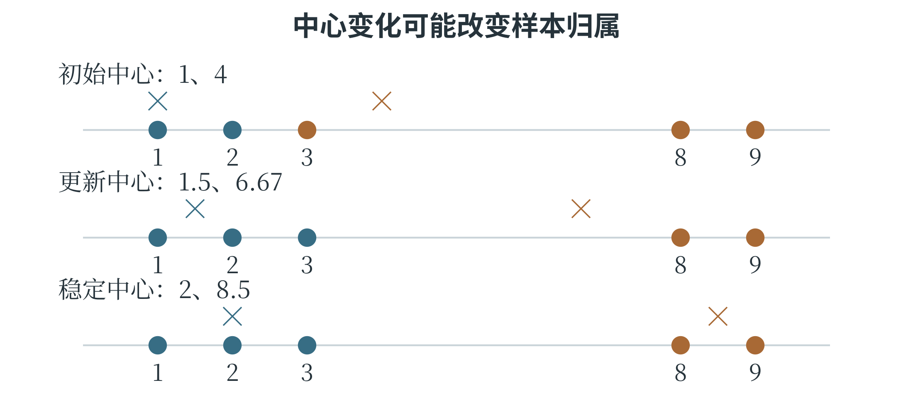

6.3 聚类与 K-means
用中心代表一组数据
K-means，中文常称 K 均值聚类，希望把数据分成 \(K\) 个簇，使同一簇中的点尽量靠近该簇的中心。这里的 \(K\) 是簇的数量，与 KNN 的邻居数量不是同一个意思。每个中心用向量表示，对应分量通常取该簇样本的平均值，因此称为均值。以一维数据 1、2、8、9 为例，希望分成两簇。若先把中心放在 1 和 8，每个样本寻找较近的中心，把 1、2 分入第一簇，把 8、9 分入第二簇。随后重算中心，分别得到 1.5 和 8.5。按新中心重新分配样本，分组不再改变，这次迭代便达到稳定结果。在二维中，只需将每个点到中心的距离换成二维欧氏距离，中心的横、纵坐标分别求平均。
常见算法反复交替做两件事：固定中心，将样本分给最近的中心；固定分组，将中心移到该组的均值。每次完整的“分配—更新”称为一轮迭代。停止条件可以是分组不再变化、中心移动小于规定值，或已经达到最大迭代次数。距离相同的样本和没有分到样本的空簇，需要实现中的相应处理规则。
K-means 的目标常写成各点到所属中心的距离平方之和。若 \(c_i\) 表示第 \(i\) 个样本所属簇的编号，\(\mu_{c_i}\) 表示该簇中心，则：
两条竖线在这里表示向量的欧氏长度，所以 \(\|x_i-\mu_{c_i}\|^2\) 就是各分量之差的平方和。这个目标鼓励簇内紧凑。分配步骤选择最近中心，不会让当前样本的这项距离变大；更新步骤取均值，则使给定簇内的平方距离和最小。两步交替改进同一个目标，但不保证找到所有可能分组中的全局最优方案。
观察一个真正改变分组的迭代过程
为了看清反复分配的作用，使用一维数据 1、2、3、8、9，设 K 为 2，初始中心为 1 和 4。第一次按最近中心分组，1、2 进入第一簇，3、8、9 进入第二簇。更新均值后，中心变为 1.5 和 \(20/3\)，约为 6.67。此时重新检查样本 3：到第一个中心的距离为 1.5，到第二个中心约为 3.67，于是它改入第一簇。第二次更新，第一簇 1、2、3 的中心为 2，第二簇 8、9 的中心为 8.5。再次分配时，所有样本保持原簇，算法达到稳定结果。图 6-6 使用同一条数轴，圆点表示样本，较大的十字表示中心；中心可以落在没有样本的位置，因为它由均值决定，不要求一定选取某条原始记录。

最后的目标值为 \((1-2)^2+(2-2)^2+(3-2)^2+(8-8.5)^2+(9-8.5)^2=2.5\)。如果只执行第一次分配而不更新中心，就没有完成 K-means 的迭代。若只更新一次就停止，也会保留一个已经不符合“各点选最近中心”的旧分组。
下面的程序按相同步骤计算。groups 保存当前分组，centers 保存当前中心；两个列表属于不同层次，更新时先完成整批分配，再同时计算新的中心。
points = [1.0, 2.0, 3.0, 8.0, 9.0]
centers = [1.0, 4.0]
for iteration in range(10):
groups = [[], []]
for value in points:
label = min(range(2),
key=lambda j: (value - centers[j]) ** 2)
groups[label].append(value)
updated = []
for j in range(2):
if groups[j]:
updated.append(sum(groups[j]) / len(groups[j]))
else:
updated.append(centers[j])
if updated == centers:
break
centers = updated
print(groups) # [[1.0, 2.0, 3.0], [8.0, 9.0]]
print(centers) # [2.0, 8.5]
这个数值例子在稳定后得到完全相同的中心，所以直接比较列表即可。实际工具常用容许误差来判断中心移动是否足够小。程序还约定空簇暂时保留旧中心，距离并列时优先选编号较小的中心；本例中未出现空簇。不同实现可以采用其他处理办法，理解一个具体过程时应按给定规则推演。
初始中心与簇数的影响
初始中心不同，算法可能得到不同结果。一种常见改进是 K-means++，它让初始中心更有机会分散在数据的不同区域；还可以用多组初始中心分别运行，比较最终目标值。计算机通常用伪随机数来选择这些初始位置，生成过程的起始设置称为随机种子。固定种子可以重现相同的选择，便于比较算法；尝试多个起点，则有机会找到更好的分组。
簇数增多，簇内平方距离通常能减小；极端情况下，每个样本单独成簇，距离可以为零。这并不意味着分组最有用。选择 \(K\) 需要结合任务、数据规模和分组可解释性，也可以观察增加簇数后误差下降是否明显放缓。不能只按训练目标越来越小，就一路增加簇数。K-means 偏好能由中心和欧氏距离较好描述的紧凑簇。若数据是互相套着的环，或不同簇的疏密差别很大，按最近中心分组可能不合适。异常点还可能把均值中心拉偏，特征尺度也会改变距离。